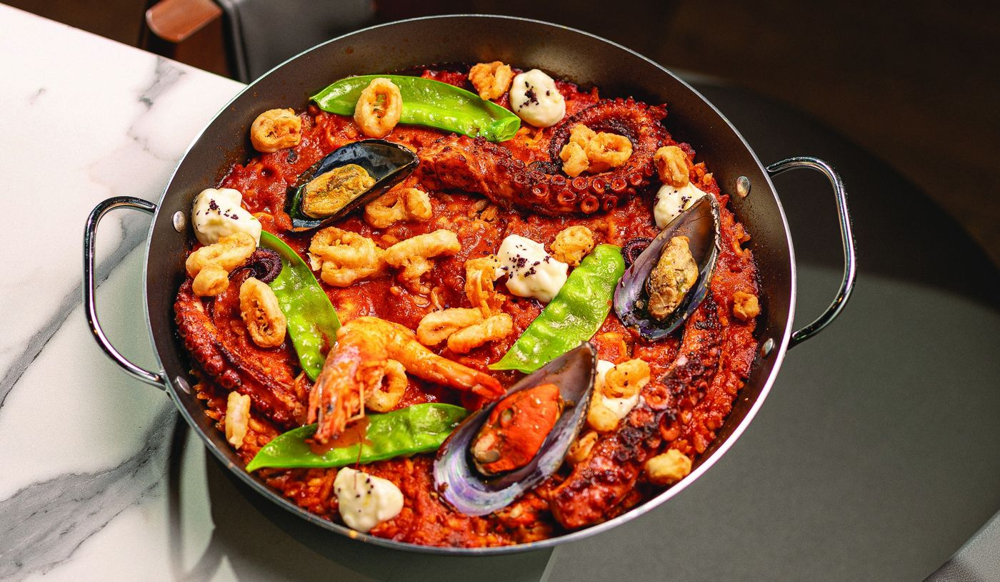
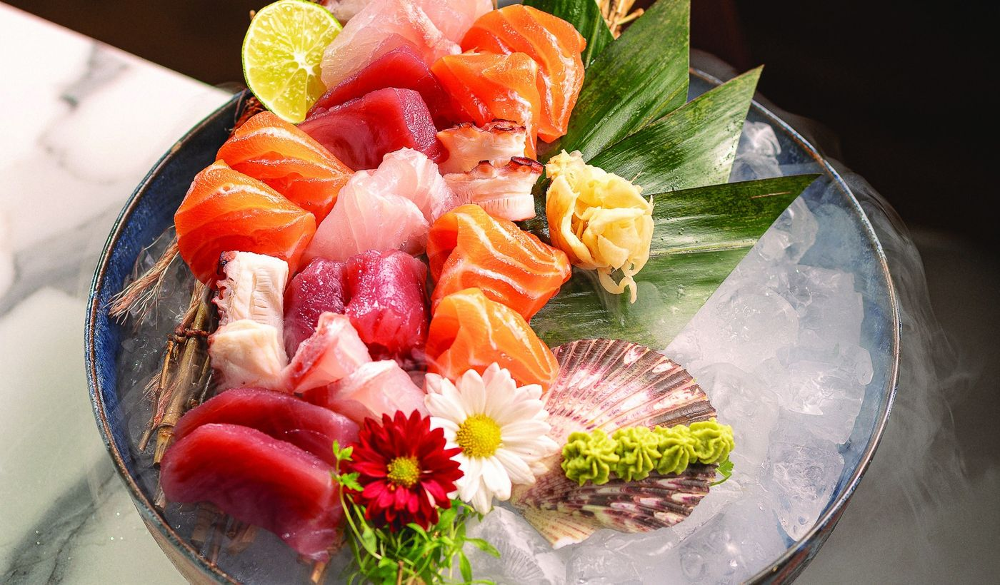
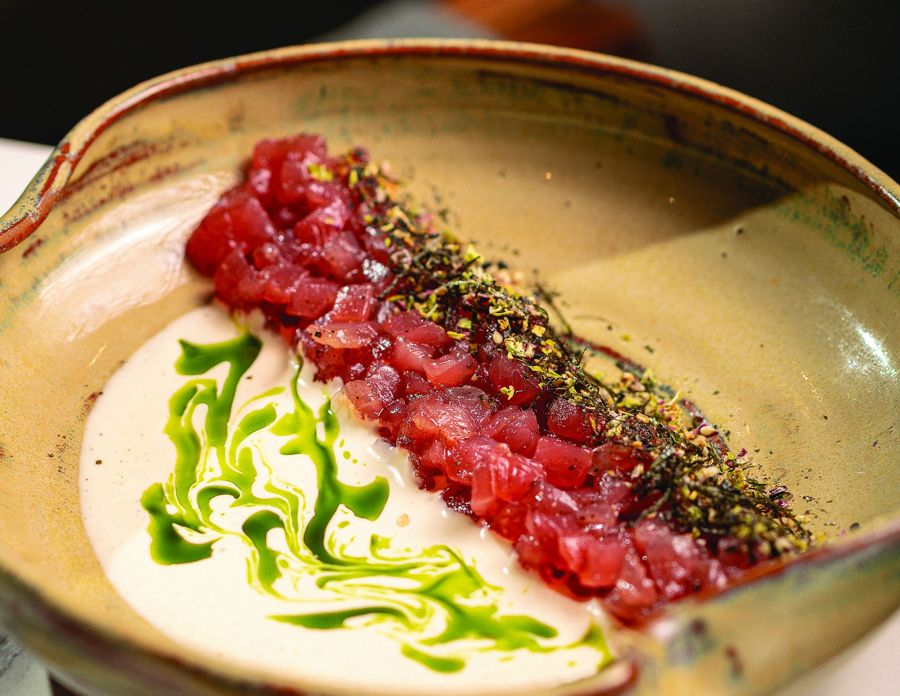
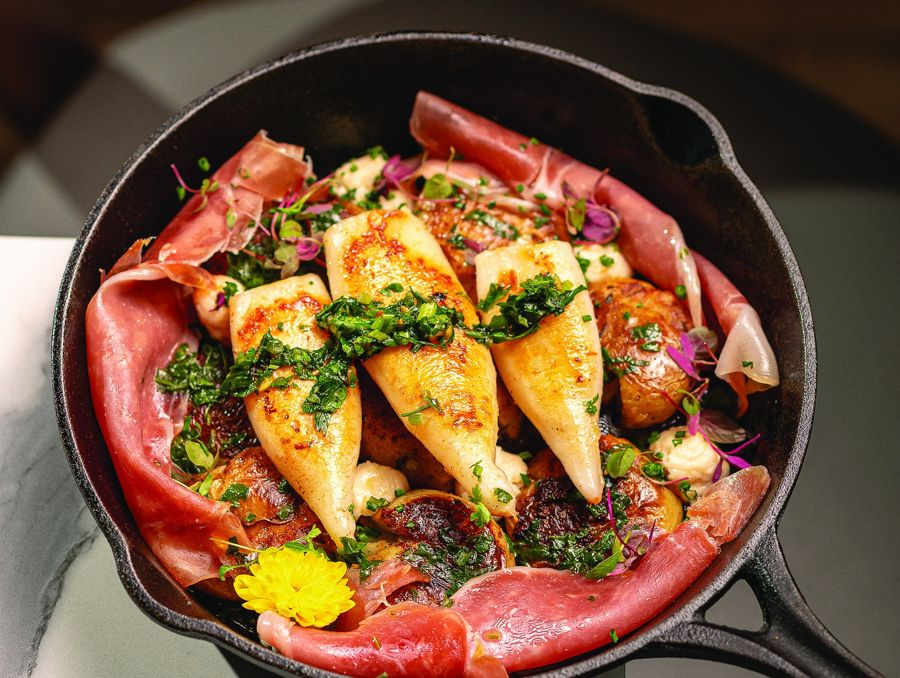
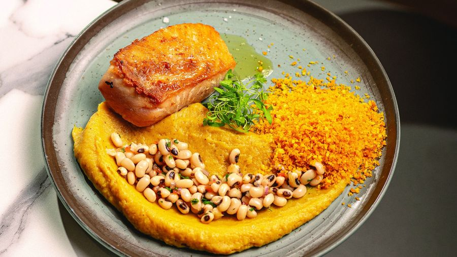
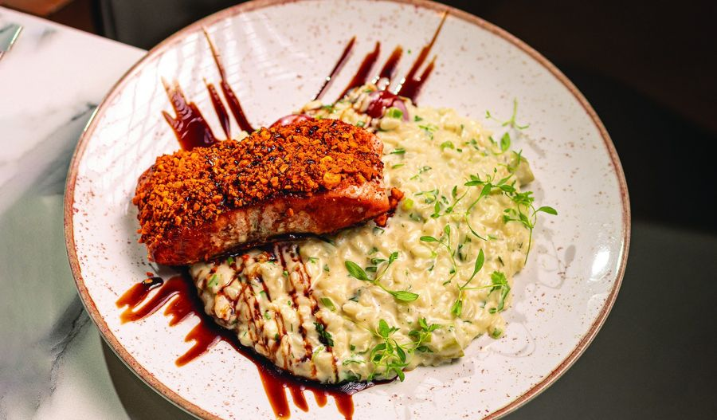
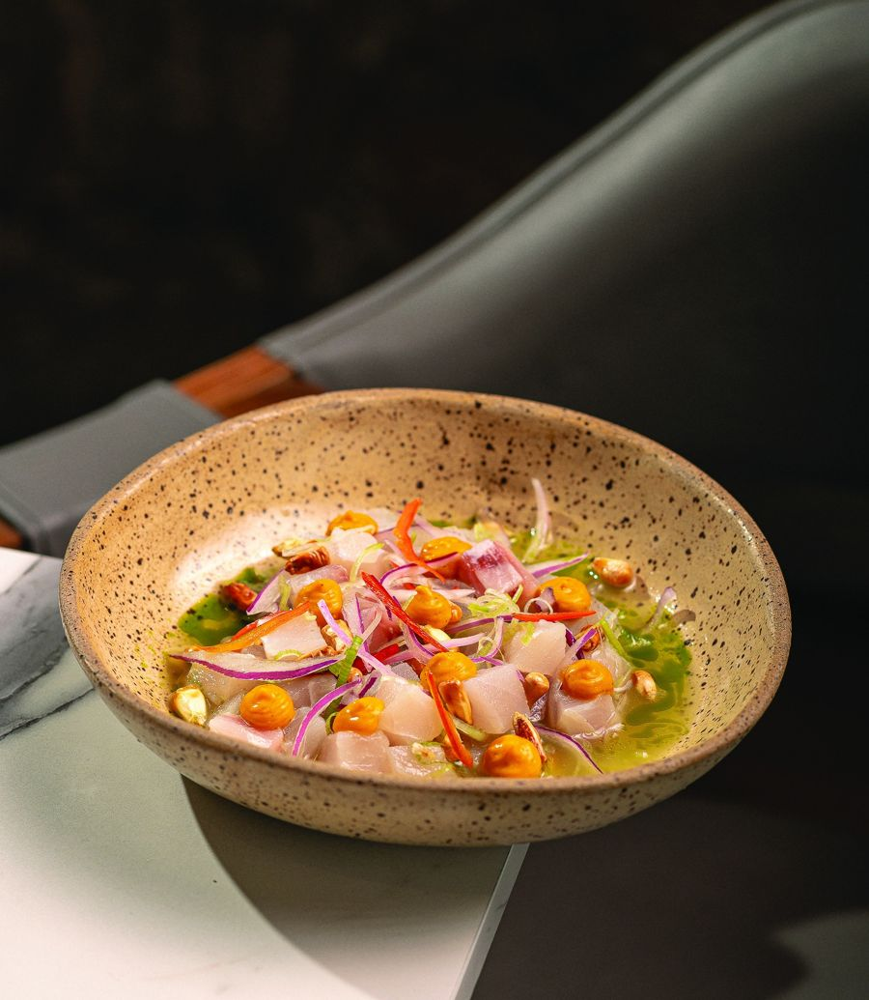

A cozinha
O mar em duas línguas.


Pratos da casa
O que sai da cozinha hoje.
Fotos do cardápio do Zephyr. Preços em reais, do cardápio atual.

Tartar de Atum
Atum na ponta da faca, leite de tigre e azeite verde.
R$ 60
Batatas ao Murro e Lulas
Lulas na manteiga, presunto Parma e gremolata.
R$ 130Fideuá de Camarões
Cabelinho-de-anjo no caldo do mar, defumado no carvão.
R$ 165
Peixe à Brasileira
Banana-da-terra, feijão-fradinho e farofa de dendê.
R$ 140
Salmão New Castle
Crosta de castanhas e risoto de aspargos.
R$ 130
Ceviche
Leite de tigre, milho chulpi e cebola roxa.
R$ 70Entradas, ceviches, sashimis, combinados, quentes e sobremesas.
Ver o cardápio completo →
A melhor hora é a última luz.
Mantenha o botão pressionado, com o mouse, o dedo, ou a barra de espaço.
- Drinks autorais.
- Mais de 80 rótulos na carta.
- Música ao vivo em dias selecionados.
Quem já sentou aqui.
"Um domingo feliz! O local é maravilhoso e a comida sempre de ótima qualidade."
"Lugar lindo, atendimento excelente, pratos saborosos e drinks espetaculares!"
"O Zephyr é nosso local favorito na cidade."
Depoimentos publicados no site atual do Zephyr.
Eventos
Sua noite, do seu jeito.
Aniversários, jantares de empresa e celebrações íntimas, com menu montado com o chef.
Temporada
Réveillon na Marina. Mesas limitadas.
Formato e valores a confirmar com a casa.
Como chegar.
Av. Carlos Ely Castro, 100Dentro da Marina Itajaí, Centro
Itajaí, SC
- Terça a sábado
- 11h30 às 23h
- Domingo
- 11h30 às 17h
- Segunda
- Fechado
Estacionamento privativo gratuito.
Abrir no mapa →